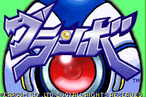

Guranbo (Japan) (Virtual Console)
SRAM 256K gbakit Built-In 📺 Joybus 💾 MultiBoot 🎮 4P Link
Cartridge Identity
- Game Code
AIBJ(FamilyAIB)- Header Title
GURANBO- Maker / Revision
08/ rev0- ROM Size
- 8.0 MiB (8,388,608 B)
- Save Media
SRAM 256K- SHA-256
cff89c0e845e012717690400111b96cd78d9ef7f6a3467e02424257a071205b9
Screenshots


Link Cable & Multiplayer Communications
This title contains detected communication capabilities: 📺 Joybus 💾 MultiBoot 🎮 4P Link.
Detailed protocol specifications, SIO registers, Joybus commands, and MultiBoot sequences are documented in the Link & Multiplayer Reference.
- Multi-Player SIO (4P)
- 16-bit ring network · SIOCNT (
0x04000128) literals:0x002e88,0x002eb4· SIODATA32/SIOMULTI0 (0x04000120) literals:0x33b650,0x56fe28,0x7c0478 - GameCube Joybus
- Register literal
REG_JOY_TRANS(0x04000154) at offset0x3503c0 - Single-Cart MultiBoot
- Single-Cartridge MultiBoot (Download Play) client/server handler · Thumb SWI 0x25 (
0xDF25):0x14e534,0x153b14,0x16002e,0x167696
Battery Save Support in gbakit
Built-in definition (AIBJ)
gbakit save verify AIBJ save.sav
gbakit save decode AIBJ save.sav
gbakit save fix AIBJ damaged.sav -o repaired.savText, Fonts & Scene Data
- Primary Text Encoding
- 16-bit / UTF-16LE text (
37ASCII strings ·14Shift-JIS runs) - Font & VWF Indicators
- VWF Width Table 1bpp Font · BIOS SWIs: BitUnPack
0x10:13· LZ770x11/12:20· Huffman0x13:4· RLE0x14/15:8 - Scene & Packaging
27ROM pointer tables (≥32 entries,4≥200) ·30relativeu32TOCs ·436OAM metasprite hits
Hardware MMIO Subsystems
ppu_display0x80006e0,0x80467c4save_bus_sram_flash0x8049758
Regional Variants & Revisions (Family AIB)
- Guranbo (Japan) (
AIBJ, 8 MiB)